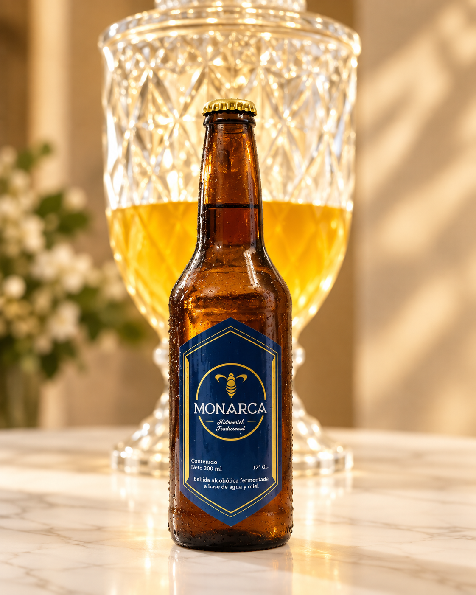
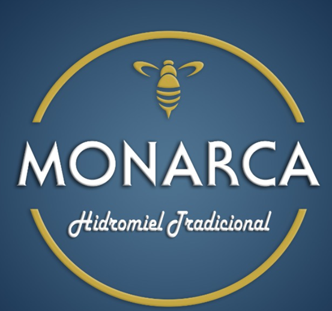
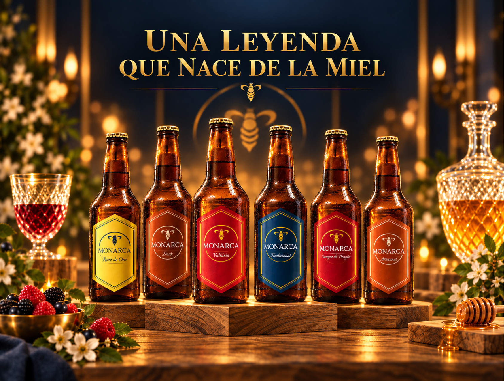
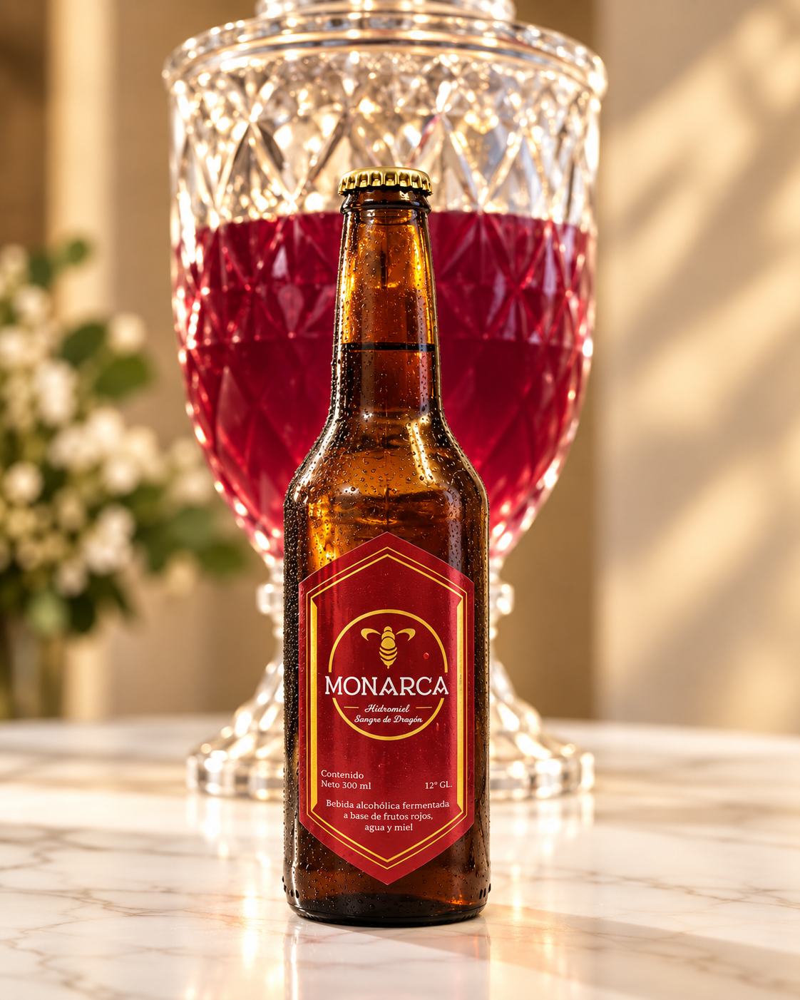
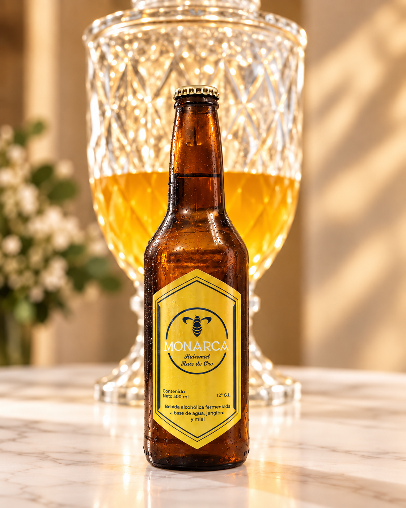

hidromiel-tradicional.jpgHidromiel
Hidromiel Tradicional
La expresión clásica de Monarca, elaborada para resaltar el carácter natural de la miel y ofrecer un perfil a citricos suave, equilibrado y agradable al paladar.

MONARCAMONARCA nace del deseo de transformar la riqueza de la miel boliviana en una experiencia única. Por eso trabajamos con mieles originarias del Chaco tarijeño y de los Yungas paceños, mieles con identidad, aroma y sabor caracteristico a cada botella. Cada hidromiel se elabora mediante una fermentación cuidadosa, acompañada de tiempo, paciencia y dedicación. A partir de esta base creamos variedades clásicas y expresiones con adición de frutas y especias, dando vida a perfiles frescos, frutales, intensos y especiados. El resultado son hidromieles de 12° GL, donde la miel sigue siendo la verdadera protagonista.
Para quienes buscan una experiencia más intensa y sofisticada, MONARCA presenta su destilado de hidromiel de 30° GL, elaborado a partir de hidromiel y posteriormente añejado en roble francés. La combinación de la madera, el tiempo y la esencia de la miel aporta mayor suavidad, complejidad aromática y un carácter elegante, creando una propuesta distinta para descubrir otra forma de disfrutar la hidromiel.

Monarca nace en el año 2021 para transformar la miel en experiencias diferentes, combinando tradición, innovación y sabores con personalidad propia.
Haz clic en cada producto para conocer su presentación. Las imágenes quedan listas para que las reemplaces.

hidromiel-tradicional.jpgLa expresión clásica de Monarca, elaborada para resaltar el carácter natural de la miel y ofrecer un perfil a citricos suave, equilibrado y agradable al paladar.

hidromiel-sangre-de-dragon.jpgUna hidromiel intensa y frutal, donde la miel se combina con arándanos y guinda para crear un perfil profundo, ligeramente ácido y de gran personalidad que te dejara el aliento de dragón.

hidromiel-raiz-de-oro.jpgUna hidromiel fresca y especiada, elaborada con jengibre para aportar notas vibrantes, ligeramente picantes y un final cálido. Su carácter vigorizante y energizante se equilibra con la dulzura natural de la miel, creando una experiencia intensa, refrescante y llena de personalidad..
 hidromiel-flor-de-jamaica.jpg
hidromiel-flor-de-jamaica.jpgUna hidromiel aromática y refrescante, con delicadas notas florales y una acidez equilibrada que realza la suavidad y el carácter natural de la miel.
 hidromiel-dark.jpg
hidromiel-dark.jpgUna propuesta intensa y envolvente, donde la miel se fusiona con café de los Yungas paceños, reconocido por sus delicados aromas frutales. El resultado es una hidromiel de perfil elegante, aromático y profundo, con notas tostadas y una personalidad distintiva.
 hidromiel-tentacion.jpg
hidromiel-tentacion.jpgUna hidromiel creada para cautivar desde el primer sorbo, donde la dulzura de la miel se fusiona con las notas intensas y envolventes del cacao. Su perfil aromático, ligeramente tostado y equilibrado ofrece una experiencia suave, profunda y llena de carácter.
 hidromiel-valkiria.jpg
hidromiel-valkiria.jpgUna hidromiel frutal y elegante, elaborada con moras y fresas que aportan aromas intensos, frescura y un agradable equilibrio entre dulzor y acidez. Su carácter vibrante y afrutado crea una experiencia suave, aromática y llena de personalidad.
 hidromiel-peach.jpg
hidromiel-peach.jpgUna hidromiel suave y refrescante, elaborada con durazno para aportar notas frutales, delicadas y naturalmente aromáticas. Su equilibrio con la dulzura de la miel crea un perfil ligero, agradable y fácil de disfrutar.
 hidromiel-anejo.jpg
hidromiel-anejo.jpgUna hidromiel seca de mayor profundidad y complejidad, añejada durante un año en barril de roble francés. El tiempo aporta suavidad, equilibrio y elegantes matices de madera, manteniendo presente el aroma natural de la miel. Una propuesta pensada para quienes disfrutan perfiles secos, intensos y de carácter refinado.
 destilado-de-hidromiel.jpg
destilado-de-hidromiel.jpgUna expresión premium, intensa y sofisticada de Monarca, obtenida a partir de hidromiel y cuidadosamente destilada para concentrar su esencia y preservar el carácter de la miel. Con 30 °GL y un añejamiento de seis meses en roble francés, desarrolla elegantes aromas a madera, matices cálidos y una sutil dulzura natural. El resultado es un destilado complejo, refinado y de gran personalidad, ideal para quienes disfrutan de bebidas con la profundidad y el carácter propios del whisky.
 hidromiel-premium.jpg
hidromiel-premium.jpgUna edición limitada que representa la máxima expresión de Monarca, obtenida a partir de hidromiel sometida a un cuidadoso proceso de doble destilación para concentrar su esencia, aromas y carácter. Su añejamiento en roble francés aporta profundidad, elegancia y delicados matices de madera, dando como resultado un destilado intenso, complejo y refinado. Presentado en una exclusiva caja elaborada con madera exótica de origen boliviano, es una propuesta creada para paladares exigentes que buscan una experiencia verdaderamente distintiva.
Este apartado está preparado para publicar la próxima feria, evento o punto de degustación.

Reemplaza estos datos cada vez que Monarca participe en una nueva feria o evento.
Una pestaña para presentar lanzamientos, pruebas, ediciones limitadas o productos en desarrollo.
 nuevo-producto-1.jpg
nuevo-producto-1.jpgEspacio preparado para el siguiente producto Monarca.
 nuevo-producto-2.jpg
nuevo-producto-2.jpgUtiliza este espacio para una edición limitada o producto estacional.
 nuevo-producto-3.jpg
nuevo-producto-3.jpgPresenta aquí una novedad sin revelar todos sus detalles.
Puedes usar esta sección para fotografías de productos, ferias, degustaciones y clientes.
Actualiza aquí tu WhatsApp y tus redes sociales antes de publicar.